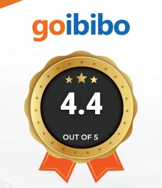
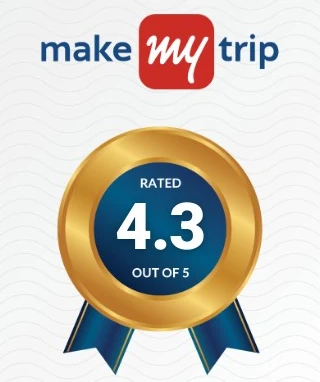

Kutralam Ezhilagam · Comfortable Stay near Courtallam Main Falls
-
A/C &
Non A/C -
Family
Friendly -
24/7 Power
Backup
Justdial Users' Choice 2025. Nine rooms — studios and suites, sleeping two to fifteen — a short walk from the Main Falls.